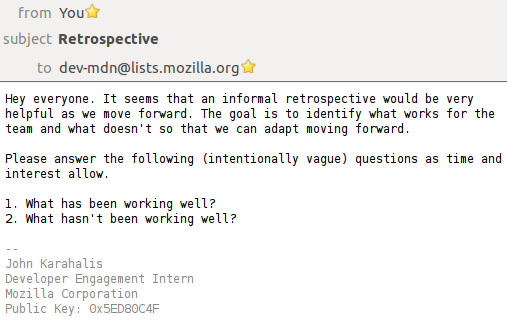
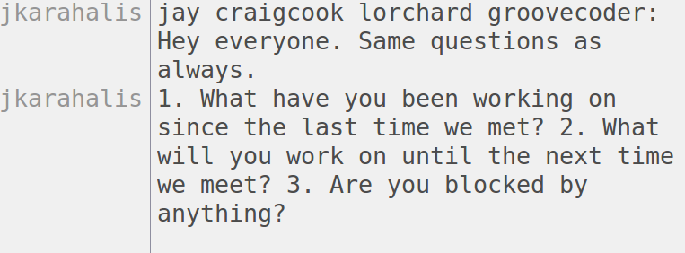
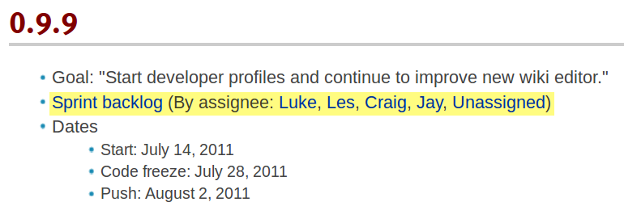
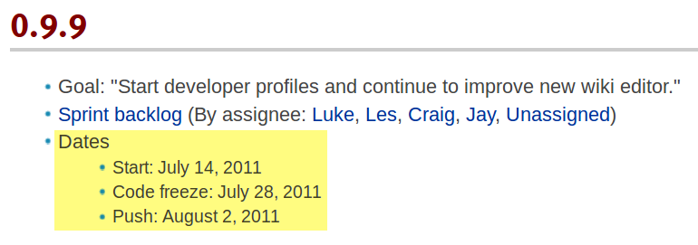
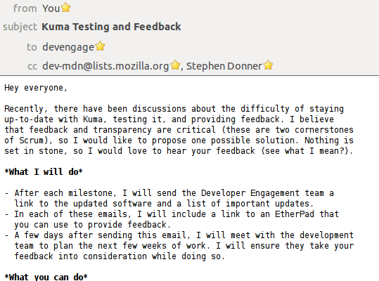
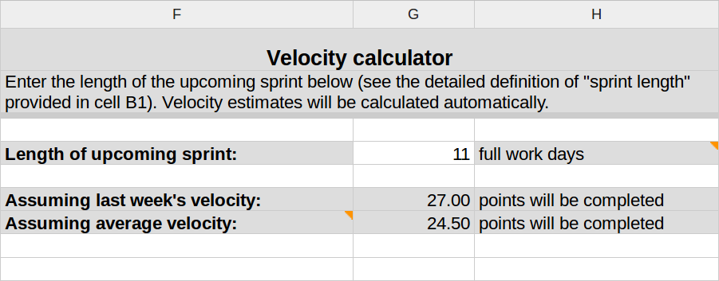

MDN Development Process Improvements
Tales of an Engagement intern doing software engineering
MDN Development Process Improvements
Tales of an Engagement intern doing software engineering
But first...
Thanks!
"We should start an email thread for discussing changes to our meetings and processes."

"I'm glad we're actually making the process better."
"I would like if we had a Daily Standup."

"Daily standups are great! They're short, unobtrusive, and I get a daily sync of what everyone is doing."
"I lose track of what I actually need to do for a release."

"Our releases keep slipping."

"We finished with enough time for dedicated QA!"
"As a user, it's hard for me to know what you're working on."

"This new feedback process sounds fabulous."
"We are very bad at estimating, so we never know how much work we should take on at a time."

"I like the point system - I think it gives us an idea how much we're doing, where we're spending our effort, and if we're on track."
Thank you.
Twitter: @openjck
Email: jkarahalis.mozilla@gmail.com